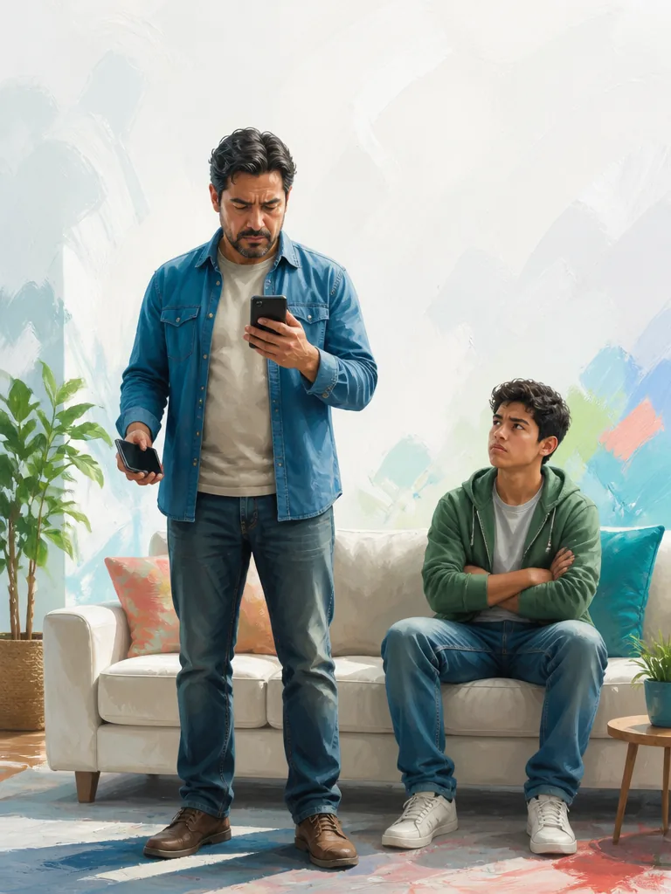
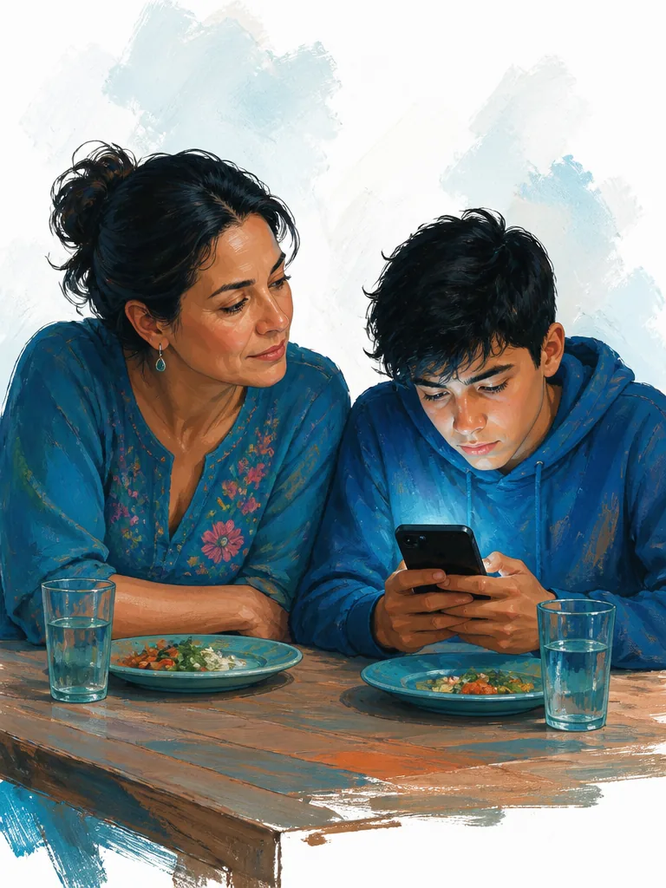
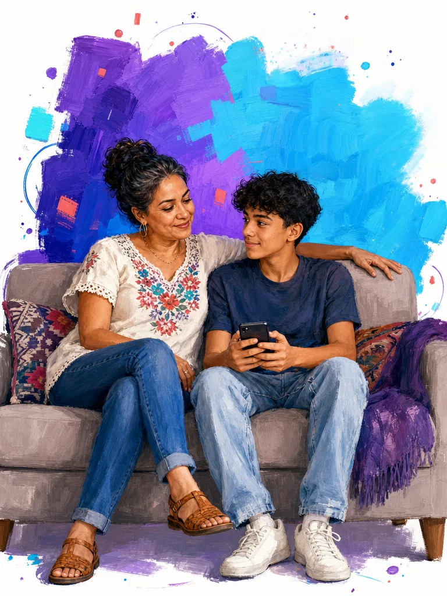
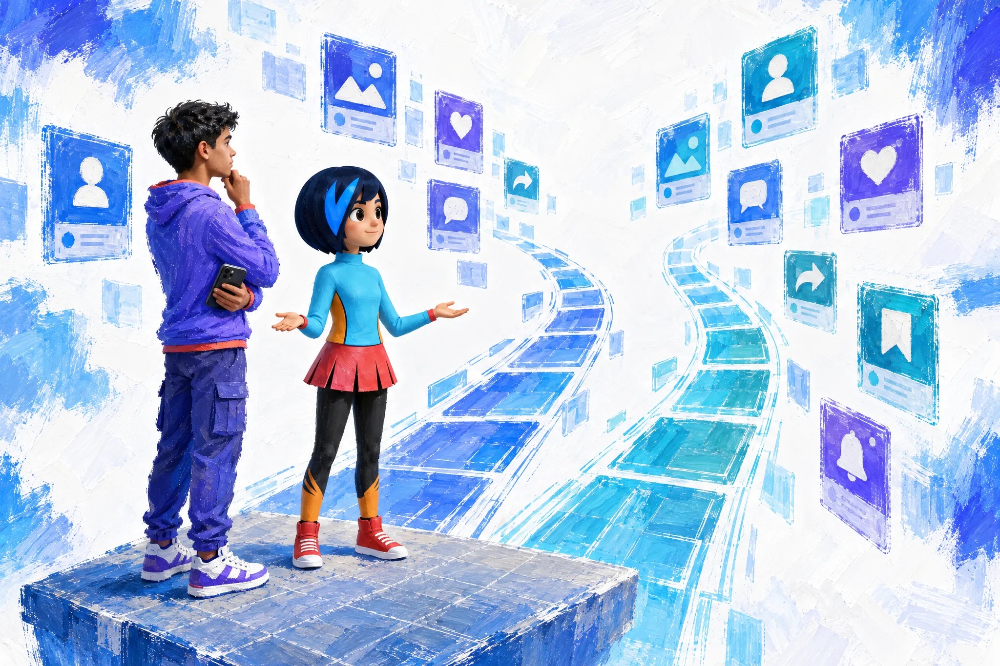
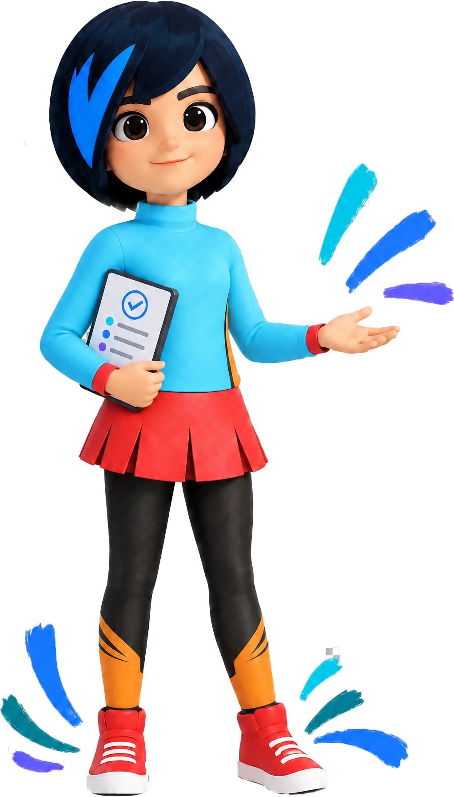

Acompañar, no vigilar
Privacidad, acuerdos y señales de cuidado se diferencian de forma explícita y calmada.
Sistema de diseño Landing A
Landing A · Digizen
Todo lo que la interfaz y la experiencia de la landing A necesitan para mantenerse coherentes: por qué se ve así, con qué se construye, cómo se comporta y cada componente ya diseñado.
Parte 1
Claro, sereno y competente.Nunca como vigilancia, castigo o una plataforma infantilizada.
Digizen acompaña conversaciones familiares sobre vida digital. La experiencia combina una base editorial sobria con momentos expresivos alrededor de ADA.
La landing le habla a un papá o a una mamá que llega con culpa y cansancio. Por eso el diseño baja la guardia antes de pedir algo: mucho aire, una sola idea por tramo, color solo donde significa algo y una acción clara cuando el lector ya entendió.
Son los siete principios del sistema de producto de Digizen (01-design-system.md). Gobiernan también la landing.
Privacidad, acuerdos y señales de cuidado se diferencian de forma explícita y calmada.
Cada tramo prioriza un único siguiente paso; la información auxiliar se mantiene visible sin competir.
Se conservan los tonos de la propuesta original; el sistema define sus usos, no los sustituye.
La placa de icono y las líneas de las cajas son parte del lenguaje de navegación y agrupación.
Degradados, brillos y movimiento pertenecen a ADA y a la respuesta puntual, no a todas las superficies.
La jerarquía permite escanear qué es lo principal, qué puede hacer la familia y qué profundidad es opcional.
Los mismos valores resuelven todas las piezas; solo cambian la densidad y el lenguaje de cada audiencia.
Lo que hoy está construido. Cuando un documento anterior dice otra cosa, vale lo de esta lista.
| Decisión | Cómo se ve | Desde |
|---|---|---|
| Base fría y superficies opacas | Fondo gris-azulado, tarjetas blancas con borde de 1 px y una sola sombra suave. Sin retículas ni degradados de ambiente en el contenido. | 11 sep 2026 |
| Titulares en dos tonos | El fragmento que prepara va en gris; el mensaje, en tinta. Es la firma tipográfica de la página. | 11 sep 2026 |
| Color solo con significado | Azul para estructura, cian para ADA, coral para cuidado, verde para confirmar, dorado para hitos. Coral nunca es una acción. | 11 sep 2026 |
| Escenas en foto-ilustración | Rostros con calidad fotográfica intervenidos con pincelada, sobre lienzo blanco con halo de bloques de color. | 15 sep 2026 |
| Botón principal con el degradado del logo | De #1a75ea a #2c1ddb, la misma dirección del círculo del logo. Antes era azul sólido; el documento de la revisión v2 todavía habla de violeta. | 5 oct 2026 |
| Contraste mínimo de 4.5:1 | El verde de énfasis se oscureció y las notas de 10 px pasaron al gris de lectura. | 5 oct 2026 |
| Imágenes en AVIF con WebP de respaldo | Cada AVIF se compara con su original y solo se usa si es al menos tan fiel como el WebP. | 5 oct 2026 |
| ADA puede aparecer en las escenas | Cuando la escena trata de su acompañamiento, como en la regla principal de Reglas de ADA. Antes la regla decía que nunca aparecía. | 5 oct 2026 |
| Tarjetas de un mismo grupo, misma altura | La más larga marca la altura de todas, en la fila y entre filas. Excepción intencional: la tarjeta de precio destacada es más grande que la otra. | 5 oct 2026 |
Una regla del sistema que la landing A todavía no aplica. Vive en css/digizen-ajustes.css, aparte de la copia del CSS de la landing; los ejemplos de esta guía ya la llevan. La landing no se modificó.
| Qué | En la landing publicada | En el sistema |
|---|---|---|
| Altura entre filas de tarjetas | Las tarjetas de una misma fila miden igual, pero cada fila toma su propia altura. En Reglas de ADA, a 1280 px de ancho, unas filas miden 305 px y otras 328. | Todas las filas de una rejilla miden lo mismo (grid-auto-rows: 1fr). En Reglas de ADA la regla principal conserva su alto. |
Parte 2
Todo color es una variable CSS con prefijo --dg-. Cada una tiene valor para el tema claro y para el oscuro; los componentes nunca escriben un color directo.
Hay dos juegos de color con significado. Los de relleno pintan placas, avatares y acentos, siempre con el icono en blanco. Los de texto son versiones más oscuras de los mismos tonos, porque el relleno no alcanza contraste como letra sobre fondo claro.
--dg-canvasFondo general de la página.Claro #f6f8fb · Oscuro #030303--dg-canvas-endCierre del degradado del fondo.Claro #eef4f8 · Oscuro #0f1412--dg-surfaceArranque del degradado del fondo; campos de solo lectura.Claro #fbfcfe · Oscuro #0e0e0f--dg-raisedTarjetas, controles y diálogo.Claro #ffffff · Oscuro #151516--dg-subtleSuperficie secundaria y marco de las imágenes.Claro #eef4f8 · Oscuro #202022--dg-decisionFondo de la tarjeta de precio destacada.Claro #edf4fb · Oscuro #111112--dg-navBarra de navegación y barra móvil (con desenfoque).Claro rgba(255, 255, 255, 0.92) · Oscuro rgba(21, 21, 22, 0.92)--dg-inkTexto principal y titulares.Claro #152033 · Oscuro #f4f7fb--dg-mutedTexto de lectura, notas y ayudas.Claro #617085 · Oscuro #aab7c8--dg-softFragmento gris de los titulares. No se usa en texto pequeño.Claro #8b98aa · Oscuro #8190a5--dg-lineBordes y divisores.Claro #dfe7ee · Oscuro rgba(223, 231, 238, 0.16)--dg-line-strongBorde reforzado.Claro #a5b4c5 · Oscuro rgba(223, 231, 238, 0.32)--dg-blueEstructura, navegación y progreso.Claro #3561f3 · Oscuro #4a90ff--dg-cyanADA y acompañamiento.Claro #22bed1 · Oscuro #43deea--dg-violetReflexión y voz del alumno; enlaces de «Ver más».Claro #7057e6 · Oscuro #aa98ff--dg-coralSeñal de cuidado. Nunca una acción.Claro #ff6b5f · Oscuro #ff8077--dg-orangeEnergía y avance.Claro #f59d36 · Oscuro #ffd477--dg-goldHito o logro.Claro #f2c348 · Oscuro #ffd477--dg-greenConfirmación; borde de la opción destacada.Claro #35b576 · Oscuro #63d59f--dg-tealAcento auxiliar.Claro #1f6b69 · Oscuro #43deea--dg-text-blueÉnfasis azul dentro de un titular.Claro #2855db · Oscuro #4a90ff--dg-text-cyanÉnfasis de ADA.Claro #087f91 · Oscuro #43deea--dg-text-violetÉnfasis de reflexión.Claro #6245d7 · Oscuro #aa98ff--dg-text-coralÉnfasis de cuidado o dolor.Claro #df554c · Oscuro #ff9b94--dg-text-greenÉnfasis de confirmación.Claro #167f52 · Oscuro #7ae0ae--dg-kicker-inkAntetítulos (kicker).Claro #316cff · Oscuro #4a90ff--dg-btn-fillRelleno del botón principal: el degradado del círculo del logo.Claro linear-gradient(230deg, #1a75ea 0%, #2c1ddb 100%) · Oscuro linear-gradient(230deg, #1a75ea 0%, #2c1ddb 100%)--dg-btn-bgColor base del botón: sombras, barra de progreso y marca del antetítulo.Claro #3561f3 · Oscuro #4a90ff--dg-btn-inkTexto del botón principal.Claro #ffffff · Oscuro #ffffff--dg-selectedOpción elegida.Claro rgba(49, 108, 255, 0.08) · Oscuro rgba(74, 144, 255, 0.16)--dg-focusAnillo de foco del teclado.Claro rgba(34, 190, 209, 0.36) · Oscuro rgba(67, 222, 234, 0.38)Calculado con los valores reales. Verde: pasa para cualquier texto (4.5 o más). Ámbar: solo para texto grande (3 o más). Rojo: no usar como texto.
| Texto | Tema claro | Tema oscuro | ||
|---|---|---|---|---|
| sobre tarjeta | sobre fondo | sobre tarjeta | sobre fondo | |
--dg-inkTexto principal | 16.33 | 15.35 | 16.98 | 19.19 |
--dg-mutedTexto de lectura y notas | 5.04 | 4.74 | 8.97 | 10.13 |
--dg-softFragmento gris del titular (solo texto grande) | 2.93 | 2.75 | 5.62 | 6.35 |
--dg-text-blueÉnfasis azul | 6.15 | 5.78 | 5.84 | 6.60 |
--dg-text-cyanÉnfasis cian | 4.71 | 4.43 | 11.19 | 12.64 |
--dg-text-violetÉnfasis violeta | 6.27 | 5.89 | 7.51 | 8.49 |
--dg-text-coralÉnfasis coral | 3.79 | 3.56 | 9.01 | 10.18 |
--dg-text-greenÉnfasis verde | 5.01 | 4.71 | 11.38 | 12.87 |
--dg-kicker-inkAntetítulo | 4.45 | 4.18 | 5.84 | 6.60 |
--dg-muted para todo texto de 14 px o menos.--dg-soft en texto pequeño: solo vale en el fragmento gris del titular.Una sola familia: Inter variable, servida desde el proyecto. La jerarquía se construye con tamaño, peso y tono, no con otra tipografía.
El peso del texto base cambia con el tema: 550 en claro y 450 en oscuro, para que la letra clara sobre fondo oscuro no engorde. Las negritas dentro del texto van a 700 y en tinta.
Le quitaste el celular… con el tuyo en la mano
Nadie te enseñó esto.A ti tampoco te lo enseñaron
El control caduca. El criterio no.
Y los dos sabemos cómo terminó: en dos días encontró cómo saltárselo.
Todo lo que la interfaz necesita para mantenerse coherente.
A ti te tocó un mundo de calles y bicicletas. A tu hijo le tocó uno que se inventa cada mañana. Nadie te dio el manual.
Tu hijo puede empezar hoy mismo.
$4,990
Sin grupos, sin temporadas. Garantía 30 días desde el primer chat.
No estás solo
¿Ya viste suficiente?
Vigencia
Vale hasta el 15 de noviembre.
Una clase por significado. Se aplican a una frase dentro de un titular o de una tarjeta.
Un criterio que la pantalla no pueda comprar.
.dg-emphasis--blue
Esto se llama ADA.
.dg-emphasis--cyan
"¿Una IA hablando con mi hijo?"
.dg-emphasis--violet
Bloquear no te lo devuelve.
.dg-emphasis--coral
verte presente
.dg-emphasis--green
text-wrap: pretty) y fijar con espacio duro las dos últimas palabras de un titular.La página es una columna central de hasta 1440 px. Cada tramo es una sección con su propio aire; dentro, el contenido se reparte en dos columnas desiguales: el texto manda y la imagen acompaña.
| Medida | Valor | Para qué |
|---|---|---|
| Escala | 4 · 8 · 12 · 16 · 24 · 32 · 48 px | 8–12 une icono con texto; 16 separa ideas cercanas; 24 grupos; 32 módulos; 48 cambio de bloque. |
| Contenedor | min(1440px, 100%), margen lateral de 40 px (10 px en móvil) | .dg-main |
| Entre secciones | clamp(32px, 3vw, 48px) en desktop; 28 px en móvil | Separación vertical de los tramos. |
| Aire de la sección | clamp(30px, 3.6vw, 52px); 30 × 18 px en móvil | .dg-section |
| Dos columnas | 1.5fr + minmax(250px, 1fr), separación clamp(32px, 4vw, 56px) | .dg-grid-2. Con --media-first la imagen va primero. |
| Rejilla de tarjetas | Columnas iguales y todas las tarjetas del grupo con la misma altura | La más larga marca la altura, en la fila y entre filas. Ninguna lleva altura fija; en una sola columna (móvil) cada una mide lo que su contenido. |
| Cortes | 768 px · 1024 px · 1120 px | El cambio principal es a 1024 px: debajo, una sola columna y entra la barra de acción móvil. |
| Ancla | 108 px de margen superior al llegar a una sección (42 px en la de precio) | Para que la barra de navegación no tape el título. |
Esquinas poco redondeadas y una sola sombra por nivel. La tarjeta se distingue por su borde fino, no por su sombra.
--dg-radius-card--dg-radius-control--dg-radius-stage--dg-line. La opción destacada usa 2 px en verde.--dg-shadow-card--dg-shadow-floatLa sombra flotante es solo para lo que se superpone: navegación, barra móvil, diálogo y la tarjeta de precio destacada.
Iconos de línea, trazo redondeado, en una cuadrícula de 24. Nunca van sueltos: viven en una placa de color con el icono en blanco. El color de la placa sigue el significado, no la decoración.
Hay tres piezas más chicas que no son iconos con significado: son marcas que acompañan a una línea de texto. Tienen la forma de la placa (cuadro redondeado, con radio cercano a un tercio del lado) y su tamaño depende de lo que hacen: la que solo señala mide 24 px; la que invita a tocar mide más.
| Pieza | Medidas | Por qué ese tamaño |
|---|---|---|
| Placa de icono | 46 × 46 px, radio 15 px, icono de 22 px | Es el icono con significado y encabeza una tarjeta. El color llega por style="--accent: var(--dg-…)"; sin él es cian. |
| Avatar de nota | 82 × 82 px, radio 16 px | Presenta a quien habla en la nota. Degradado de dos tonos vecinos: azul a cian, coral a naranja, naranja a dorado, cian a verde. |
| Índice | 24 px de alto, radio 7 px, número de 10 px | Etiqueta de orden. Número en blanco sobre azul. |
| Palomita | 24 × 24 px con radio 8 px en escritorio; 28 × 28 px con radio 9 px debajo de 1024 px | Marca de lista sobre verde. Crece donde la fila se toca con el dedo. |
| Flecha | 32 × 32 px, radio 10 px | Indicador de acción. Azul con sombra corta: avisa que la fila se despliega. |
Un indicador nunca alcanza el tamaño de la placa ni cambia de color: azul para orden y despliegue, verde para confirmación.
Las escenas son foto-ilustración: rostros y piel con calidad fotográfica, intervenidos con pincelada visible, sobre lienzo blanco con un halo de bloques de color (coral, naranja, verde azulado y dorado). Muestran a la familia y el celular; nunca candados, iconos de vigilancia ni dramatismo.



ADA puede aparecer en una escena cuando la escena trata de su acompañamiento. Ya ocurre en Reglas de ADA: en la regla principal está junto a un adolescente que piensa frente a dos caminos. Si la escena es sobre la familia, los protagonistas son ellos y ADA no entra por decoración.
Cuando aparece es la misma ADA de siempre: personaje en 3D, con su diseño y sus colores, integrada a la pincelada de la escena. Va al lado del chico y a su altura: acompaña, no vigila ni elige por él.
Fuera de las escenas, ADA vive en el chat, en el saludo del formulario y en la entrada de la página de reglas.

| Regla | Detalle |
|---|---|
| Una imagen por escena | Se genera una sola, en vertical. Los recortes para tablet y móvil (-mobile) y otras proporciones (-16-9, -1-1) salen de esa misma imagen. |
| Tres archivos por imagen | El PNG original se queda en el proyecto y no se publica. De él salen el WebP y el AVIF. El respaldo previo a la optimización no se borra. |
| AVIF primero, WebP de respaldo | Dentro de <picture>. Un AVIF solo se usa si es al menos tan fiel al original como el WebP y pesa menos. |
| Medidas declaradas | Toda imagen lleva width y height. Carga diferida en todas menos la de apertura, que lleva prioridad alta. |
| Texto alternativo | Describe la escena y lo que comunica. Si la imagen es decorativa (el retrato del panel de decisión), va vacío y oculta a lectores de pantalla. |
| Marco | .dg-media: borde fino, radio de tarjeta y sombra de tarjeta. Sin leyendas encima de la imagen. |
El canon completo y los prompts están en 05-image-generation-canon-2026-09-15.md y en los archivos 06 a 10 de la carpeta de la landing.
El movimiento responde a algo que hizo el lector: tocar, pasar el cursor o avanzar con el scroll. No hay animación de ambiente. Todo usa la misma curva, que arranca rápido y frena suave.
| Qué | Cómo |
|---|---|
| Curva | cubic-bezier(0.22, 1, 0.36, 1) (--dg-ease) |
| Duraciones | 160–180 ms en cambios de color y de estado; 210–260 ms en botones, paneles y diálogo. |
| Botón | Al pasar el cursor sube 1 px y crece su sombra. Al presionar baja 1 px y se encoge a 96.5 % en 90 ms. |
| Chat de producto | Los mensajes entran una sola vez, cuando el chat llega al 78 % de la pantalla. ADA «escribe» antes de cada respuesta. |
| ADA que saluda | 130 cuadros recorridos con el scroll mientras el formulario cruza la pantalla. Solo en desktop; en tablet y móvil queda el primer cuadro. |
| Reloj | Video que avanza con el scroll. Solo en desktop; en tablet y móvil se muestra la imagen fija y el video no se descarga. |
| Navegación | La barra se ensancha y revela el logo en los primeros pixeles de scroll; su línea inferior marca el avance de lectura. |
| Ir a una sección | Desplazamiento propio con duración acotada: un salto del menú al pie no tarda segundos. |
La landing tiene tema claro y oscuro. El oscuro no es un filtro: cada variable tiene su valor propio y el logo cambia de versión. Se activa con data-theme="dark" en el elemento <html>; el botón redondo de la barra lo alterna.
Esta guía usa el mismo mecanismo. Cámbialo con el botón de arriba a la derecha y revisa cualquier componente en los dos temas.
Parte 3
La página cuenta una historia larga. No pide nada hasta que el lector entendió algo, y cuando pide, ofrece siempre las mismas dos salidas: inscribir (principal) o conversar con ADA (secundaria, sin riesgo).
| Pieza | Regla |
|---|---|
| Par de acciones | Principal a la izquierda o arriba, secundaria después. Cada botón dice la acción y su refuerzo: «Inscribir a mi hijo · EMPIEZA HOY», «Tengo dudas · CONVERSAR CON ADA». |
| Panel de decisión | Aparece cuatro veces, después de cada tramo fuerte. Siempre con la misma estructura: retrato, pregunta, promesa y el par de acciones. |
| Barra de acción en móvil | Aparece cuando el lector ya pasó el primer panel de decisión. Antes de la oferta invita a conversar con ADA; al entrar a la oferta cambia a inscribir. Se puede cerrar. |
| Acción en la barra de navegación | «Inscribir» está siempre a la vista en desktop y lleva a las tarjetas de precio. |
| Un solo destino | Todo botón de inscripción lleva a las tarjetas de precio; todo botón de ADA abre el mismo formulario. |
El texto es largo y emocional. Para no abrumar, la profundidad es opcional y el lector decide cuándo abrirla.
| Recurso | Cuándo | Regla |
|---|---|---|
| Leer más | Un párrafo que sigue con testimonios o detalle. | Se corta en el punto de tensión, con puntos suspensivos y «Ver más». Al abrir, «Ver menos» queda al final. |
| Acordeón con índice | Una lista de pruebas o argumentos. | El primero abre. Cada fila lleva número y flecha azul. |
| Preguntas frecuentes | Dudas antes de decidir. | Cada pregunta es una caja propia que se abre en su sitio. |
| Índice de reglas | La página de reglas de ADA. | La lista de arriba lleva a cada tarjeta y la resalta un momento al llegar. |
Todo lo que se despliega debe verse desplegable: flecha, subrayado o símbolo, y cambio de cursor. Una tarjeta que no hace nada no debe parecer un botón.
| Regla | Detalle |
|---|---|
| Pedir lo mínimo | Nombre, correo y WhatsApp opcional. Lo opcional se dice en la etiqueta. |
| Etiqueta arriba | En mayúsculas pequeñas, siempre visible. El texto de ejemplo dentro del campo no sustituye a la etiqueta. |
| Campos cómodos | 48 px de alto mínimo, con el tipo correcto (correo, teléfono) y autocompletado. |
| Una acción | Un solo botón, a todo el ancho, con la misma frase que abrió el formulario. |
| Decir qué pasa después | Una línea de apoyo bajo el botón explica a dónde llega el acceso. |
| Diálogo | Centrado en desktop; en móvil sube desde abajo. Se cierra con la ×, con Escape o tocando fuera. |
| Regla | Detalle |
|---|---|
| Contraste | 4.5:1 como mínimo en todo texto; 3:1 solo en texto grande. Medido con Lighthouse el 5 de octubre de 2026. |
| Foco visible | Anillo de 3 px separado 3 px, en botones, enlaces, campos y filas desplegables. |
| Tamaño de toque | 44 px como mínimo; 48 px en las acciones principales y los campos. |
| Nombre accesible | Si un control tiene nombre para lectores de pantalla, ese nombre incluye el texto que se ve. |
| Estructura | Un solo título de página; cada sección se anuncia con su titular. Los iconos decorativos se ocultan a lectores de pantalla. |
| Color acompañado | El color nunca es el único aviso: coral va con título y texto; la opción destacada va con borde y etiqueta. |
| Preferencias del sistema | Se respetan «reducir movimiento» y «reducir transparencia». |
La página debe aparecer rápido en un teléfono con conexión regular. Estas reglas salen de lo medido y corregido.
| Regla | Por qué |
|---|---|
| La imagen de apertura se precarga | En el formato que el navegador va a usar, y solo ese. |
| Lo demás carga al acercarse | Imágenes con carga diferida; los cuadros de ADA empiezan a bajar cuando su sección está cerca. |
| Móvil no descarga lo de desktop | El video del reloj y los cuadros de ADA solo se piden en desktop. |
| La hoja de estilos llega antes de pintar | Como enlace normal. Diferida, la página podía verse un instante sin estilos y saltar. |
| Tipografía propia | Inter se sirve desde el proyecto; no se espera a otro servidor. |
| Medir en incógnito | Las extensiones del navegador falsean Lighthouse. La línea base está en Projects/auditorias-lighthouse/. |
| Regla | Detalle |
|---|---|
| El texto es literal | El copy viene de su fuente y no se resume, corrige ni reescribe al diseñar. Un cambio de texto se pide y se aprueba aparte. |
| Tú a tú | Segunda persona, frases cortas, sin tecnicismos. Primero se quita la culpa; después se explica. |
| Negrita y cursiva | Negrita para el golpe de la idea. Cursiva para lo que alguien dice o piensa. |
| Citas | La cita va en negrita y su autor debajo, en mayúsculas pequeñas («Una mamá», «Un niño»). |
| Rayas | Una raya nunca queda al final de una línea: se une a la palabra siguiente con espacio duro. |
| Sin emojis | Los símbolos son iconos de línea dentro de su placa. |
Parte 4
Todos parten de la misma gramática: superficie blanca, borde de 1 px, radio de 8 px y una sombra suave. El color, el icono o la regla expresan significado; no crean una familia distinta. Cada entrada enlaza a su ejemplo en la librería.
.dg-btn--secondary) ofrece la ruta alterna..dg-kicker y sobretítulo .dg-eyebrow.dg-h2span.dg-h2-muted en gris, en su propia línea, y el resto en tinta..dg-note.dg-card--side); cabecera con icono y título en línea (.dg-guard-card)..dg-media--portrait) y proporciones propias para el árbol de decisiones, la invitación y la presencia..dg-decision.dg-accordion.dg-readmore-trigger.dg-product.dg-form.dg-pricing-card--featured): más grande que la otra a propósito, con borde verde de 2 px, fondo propio y sombra flotante..dg-guarantee-seal.dg-nav.dg-mobile-cta.dg-dialog.dg-rule-card.dg-section--cyan, --violet y --grid son marcas de tramo; hoy todas comparten el mismo fondo transparente.Parte 5
Cada ejemplo es el marcado real de la landing, pintado con su CSS real. Cambia de tema para verlos en oscuro. «Ver el marcado» muestra el HTML para copiarlo; los trazos de los iconos se resumen.
El principal avanza; el secundario ofrece la salida de bajo riesgo. Van juntos y en ese orden.
<div class="dg-decision-actions">
<button type="button" class="dg-btn">
Inscribir a mi hijo · EMPIEZA HOY
<svg viewBox="0 0 24 24" aria-hidden="true">…</svg>
</button>
<button type="button" class="dg-btn dg-btn--secondary">
<svg viewBox="0 0 24 24" aria-hidden="true">…</svg>
Tengo dudas · CONVERSAR CON ADA
</button>
</div>Aparece después de cada tramo fuerte del relato. Retrato, pregunta, promesa y las dos acciones.
¿Ya viste suficiente?
Tu hijo puede empezar hoy mismo.
Sin grupos, sin temporadas. Garantía 30 días desde el primer chat.
<section id="decision-early" aria-label="Decisión después del beat 2" class="dg-decision dg-decision--with-portrait">
<figure aria-hidden="true" class="dg-decision-portrait"><img src="assets/digizen/generated/scenes/dg-scene-cta-father-son-team-1-1.webp" alt="" width="956" height="956"></figure>
<div class="dg-decision-copy">
<p class="dg-eyebrow">¿Ya viste suficiente?</p>
<p class="dg-decision-title">Tu hijo puede empezar hoy mismo.</p>
<p class="dg-support">Sin grupos, sin temporadas. Garantía 30 días desde el primer chat.</p>
</div>
<div class="dg-decision-actions">
<button type="button" class="dg-btn">
Inscribir a mi hijo · EMPIEZA HOY
<svg viewBox="0 0 24 24" aria-hidden="true">…</svg>
</button>
<button type="button" class="dg-btn dg-btn--secondary">
<svg viewBox="0 0 24 24" aria-hidden="true">…</svg>
Tengo dudas · CONVERSAR CON ADA
</button>
</div>
</section>El título de apertura no lleva antetítulo. La entrada usa el tamaño grande y un solo énfasis de color.
Y los dos sabemos cómo terminó:
en dos días encontró cómo saltárselo.
Y tú seguiste sin saber qué más hacer.
<div>
<h1 id="hero-title" class="dg-display">Le quitaste el celular… <wbr>con el tuyo en la mano</h1>
<p class="dg-lead dg-lead--h2">Y los dos sabemos cómo terminó:<br><strong class="dg-emphasis--coral">en dos días encontró cómo saltárselo.</strong><br> Y tú seguiste sin saber qué más hacer.</p>
<div class="dg-note">
<div aria-hidden="true" class="dg-note-avatar">
<svg viewBox="0 0 24 24" fill="none" stroke="currentColor" stroke-width="1.8" stroke-linecap="round" stroke-linejoin="round">…</svg>
</div>
<div><strong>No eres mal papá.</strong>Baja la guardia un segundo y escúchame, porque esto no es otro regaño con disfraz de solución.</div>
</div>
</div>Primero el fragmento gris, después el mensaje en tinta.
No estás solo
<p class="dg-kicker">No estás solo</p>
<h2 id="beat-1-title" class="dg-h2"><span class="dg-h2-muted">Nadie te enseñó esto.</span>A ti tampoco te lo enseñaron</h2>Un solo énfasis por titular, con el color de su significado.
Lo que de verdad duele
<p class="dg-kicker">Lo que de verdad duele</p>
<h2 id="beat-2-title" class="dg-h2"><span class="dg-h2-muted">No es cuánto tiempo pasa en el celular.</span>Es que cada día <span class="dg-emphasis--coral">te mira menos</span></h2>Negritas en tinta para el golpe; cursiva para las voces citadas.
Respira un segundo.
Si llegaste aquí, probablemente fue después de otra noche rara, de esas en que le dices "ya, deja el cel" por quinta vez y algo dentro de ti se aprieta. No porque él te ignoró. Porque tú no supiste qué más hacer.
Y quizá una vocecita te susurró lo de siempre: "soy un mal papá." No lo eres.
A ti te tocó un mundo de calles y bicicletas. A tu hijo le tocó uno que se inventa cada mañana, que nadie te enseñó a leer, y que cambió las reglas mientras tú trabajabas para darle de comer. Nadie te dio el manual. Tampoco a tu mamá. Tampoco al papá de junto.
Y sí, tú también andas pegado al tuyo. Eso no te hace hipócrita. Te hace humano, atrapado en la misma corriente que se lleva a tu hijo. Que se te haya ido de las manos no te hace mal padre. Lo raro sería que quitarle el aparato hubiera funcionado.
<div class="dg-copy">
<p><strong>Respira un segundo.</strong></p>
<p>
Si llegaste aquí, probablemente fue después de otra noche rara, de esas en que le dices "ya, deja el cel" por quinta vez y
<strong>algo dentro de ti se aprieta.</strong>
No porque él te ignoró. Porque
<strong>tú no supiste qué más hacer.</strong>
</p>
<p>Y quizá una vocecita te susurró lo de siempre: <em>"soy un mal papá." </em><strong>No lo eres.</strong></p>
<p>
A ti te tocó un mundo de calles y bicicletas. A tu hijo le tocó uno que se inventa cada mañana, que nadie te enseñó a leer, y que cambió las reglas mientras tú trabajabas para darle de comer.
<strong>Nadie te dio el manual.</strong>
Tampoco a tu mamá. Tampoco al papá de junto.
</p>
<p>
Y sí, tú también andas pegado al tuyo. Eso no te hace hipócrita.
<strong>Te hace humano, atrapado en la misma corriente que se lleva a tu hijo.</strong>
Que se te haya ido de las manos no te hace mal padre.
<strong>Lo raro sería que quitarle el aparato <em>hubiera</em> funcionado.</strong>
</p>
</div>La voz que acompaña. Avatar con icono de línea, frase fuerte y remate en cursiva.
<div class="dg-note">
<div aria-hidden="true" class="dg-note-avatar">
<svg viewBox="0 0 24 24" fill="none" stroke="currentColor" stroke-width="1.8" stroke-linecap="round" stroke-linejoin="round">…</svg>
</div>
<div><strong>No eres mal papá.</strong>Baja la guardia un segundo y escúchame, porque esto no es otro regaño con disfraz de solución.</div>
</div>El color cambia con el sentido: cuidado, hito y confirmación.
No es solo una pantalla entre ustedesEs otra voz enseñándole a decidir
Sé el primero en tenerlo.El beneficio fundador no se repite.
Una garantía que nadie más da.Pruébalo un mes. Los 30 días cuentan desde la primera conversación de tu hijo con ADA, no desde que pagas. Si no es para ustedes, cancelas en un clic y te devolvemos tu dinero.
<blockquote class="dg-note dg-note--coral">
<div aria-hidden="true" class="dg-note-avatar">
<svg xmlns="http://www.w3.org/2000/svg" width="24" height="24" viewBox="0 0 24 24" fill="none" stroke="currentColor" stroke-width="2" stroke-linecap="round" stroke-linejoin="round" class="lucide lucide-heart-crack" aria-hidden="true">…</svg>
</div>
<div><strong>No es solo una pantalla entre ustedes</strong><em>Es otra voz enseñándole a decidir</em></div>
</blockquote>
<blockquote class="dg-note dg-note--gold dg-founder-quote">
<div aria-hidden="true" class="dg-note-avatar">
<svg xmlns="http://www.w3.org/2000/svg" width="24" height="24" viewBox="0 0 24 24" fill="none" stroke="currentColor" stroke-width="2" stroke-linecap="round" stroke-linejoin="round" aria-hidden="true" class="lucide lucide-sparkles lucide-stars">…</svg>
</div>
<div><strong>Sé el primero en tenerlo.</strong><em>El beneficio fundador no se repite.</em></div>
</blockquote>
<blockquote class="dg-note dg-note--green dg-payment-quote">
<div aria-hidden="true" class="dg-note-avatar">
<svg xmlns="http://www.w3.org/2000/svg" width="24" height="24" viewBox="0 0 24 24" fill="none" stroke="currentColor" stroke-width="2" stroke-linecap="round" stroke-linejoin="round" aria-hidden="true" class="lucide lucide-shield">…</svg>
</div>
<div>
<strong>Una garantía que nadie más da.</strong>
<em>Pruébalo un mes. Los 30 días cuentan desde la primera conversación de tu hijo con ADA, no desde que pagas. Si no es para ustedes, cancelas en un clic y te devolvemos tu dinero.</em>
</div>
</blockquote>Vertical en desktop; en tablet y móvil entra la versión horizontal por <picture>. AVIF primero, WebP de respaldo.
<figure class="dg-media dg-media--portrait">
<picture>
<source media="(max-width: 1023px)" srcset="assets/digizen/generated/scenes/dg-scene-a01-hero-phone-hypocrisy-mobile.avif" type="image/avif">
<source media="(max-width: 1023px)" srcset="assets/digizen/generated/scenes/dg-scene-a01-hero-phone-hypocrisy-mobile.webp">
<source srcset="assets/digizen/generated/scenes/dg-scene-a01-hero-phone-hypocrisy.avif" type="image/avif">
<img src="assets/digizen/generated/scenes/dg-scene-a01-hero-phone-hypocrisy.webp" alt="Padre absorto en su propio celular mientras sostiene el celular recién confiscado de su hijo, que lo mira con fastidio" width="768" height="1024" fetchpriority="high">
</picture>
</figure>El primero abre; cada uno lleva número y la flecha indica que se despliega.
Se lo quitaste, le pusiste contraseña, y "en dos días encontró cómo saltárselo." No fue mala suerte. Tu hijo tiene todo el día para resolver un acertijo que tú revisas dos minutos en la noche.
Lo escuchamos una y otra vez. El candado aguanta unas semanas, y luego un tutorial de YouTube, un perfil nuevo, el celular de un amigo, y se acabó. La app sigue cobrándote. El control ya no existe.
Su negocio es venderte la ilusión de muralla, no resolverte el problema. Tú no fracasaste con la herramienta: la herramienta está diseñada para fracasar contigo adentro.
Tu hijo tiene entre 8 y 17: la ventana en la que todavía te escucha más que al feed. Cada mes peleando con el candado es un mes que no pasas enseñándole a pensar. El control no detiene el reloj; lo acelera, porque te tiene de policía en vez de papá.
<div class="dg-accordion">
<details open>
<summary>
<span class="dg-accordion-title"><span class="dg-index">01</span>El candado que ya abrió.</span>
<svg viewBox="0 0 20 20" aria-hidden="true" class="dg-chevron">…</svg>
</summary>
<p class="dg-accordion-body">
Se lo quitaste, le pusiste contraseña, y
<em>"en dos días encontró cómo saltárselo."</em>
No fue mala suerte. Tu hijo tiene todo el día para resolver un acertijo que tú revisas dos minutos en la noche.
</p>
</details>
<details>
<summary>
<span class="dg-accordion-title"><span class="dg-index">02</span>"Tengo Family Link y aun así se le va de las manos."</span>
<svg viewBox="0 0 20 20" aria-hidden="true" class="dg-chevron">…</svg>
</summary>
<p class="dg-accordion-body">
Lo escuchamos una y otra vez. El candado aguanta unas semanas, y luego un tutorial de YouTube, un perfil nuevo, el celular de un amigo, y se acabó. La app sigue cobrándote. El control ya no existe.
</p>
</details>
<details>
<summary>
<span class="dg-accordion-title"><span class="dg-index">03</span>Las apps de control viven del candado, y ninguna admite que se abre.</span>
<svg viewBox="0 0 20 20" aria-hidden="true" class="dg-chevron">…</svg>
</summary>
<p class="dg-accordion-body">Su negocio es venderte la ilusión de muralla, no resolverte el problema. Tú no fracasaste con la herramienta: la herramienta está diseñada para fracasar contigo adentro.</p>
</details>
<details>
<summary>
<span class="dg-accordion-title"><span class="dg-index">04</span>La ventana se está cerrando.</span>
<svg viewBox="0 0 20 20" aria-hidden="true" class="dg-chevron">…</svg>
</summary>
<p class="dg-accordion-body">
Tu hijo tiene entre 8 y 17: la ventana en la que todavía te escucha más que al feed. Cada mes peleando con el candado es un mes que no pasas enseñándole a pensar. El control no detiene el reloj; lo acelera, porque te tiene de policía en vez de papá.
</p>
</details>
</div>Corta un párrafo largo en el punto de tensión. «Ver más» va en violeta y subrayado.
Eso ya lo intentaste medir. Pusiste límites, negociaste "una hora y ya". Y el número nunca fue el problema de verdad, ¿cierto?
Lo que de verdad te aprieta el pecho …
Una mamá nos lo dijo así, y no se nos ha borrado:
"Ni siquiera me mira a los ojos."Una mamá
Y un niño, en otra parte, dijo esto. Léelo despacio:
"Mi mamá se ríe más cuando ve el celular que cuando está conmigo."Un niño
No estás perdiendo tiempo de pantalla. Lo estás perdiendo a él. Y al mismo tiempo, sin que nadie lo note, se está volviendo alguien que deja que el feed le diga quién es, qué quiere, qué vale, en un mundo que tú ya no controlas.
<div class="dg-copy">
<p>Eso ya lo intentaste medir. Pusiste límites, negociaste "una hora y ya". Y el número <strong>nunca fue el problema de verdad, ¿cierto?</strong></p>
<p>
Lo que de verdad te aprieta el pecho …
<button type="button" aria-expanded="false" class="dg-readmore-trigger">
Ver más
<svg xmlns="http://www.w3.org/2000/svg" width="24" height="24" viewBox="0 0 24 24" fill="none" stroke="currentColor" stroke-width="2" stroke-linecap="round" stroke-linejoin="round" aria-hidden="true" class="lucide lucide-chevron-down">…</svg>
</button>
</p>
</div>
<div class="dg-readmore-panel">
<div class="dg-readmore-panel-inner">
<div class="dg-copy">
<p>Una mamá nos lo dijo así, y no se nos ha borrado:</p>
<p><strong>"Ni siquiera me mira a los ojos."</strong><cite class="dg-inline-attribution">Una mamá</cite></p>
<p>Y un niño, en otra parte, dijo esto. Léelo despacio:</p>
<p><strong>"Mi mamá se ríe más cuando ve el celular que cuando está conmigo."</strong><cite class="dg-inline-attribution">Un niño</cite></p>
<p>
<strong>No estás perdiendo tiempo de pantalla. Lo estás perdiendo a él.</strong>
Y al mismo tiempo, sin que nadie lo note, se está volviendo alguien que deja que el feed le diga quién es, qué quiere, qué vale, en un mundo que tú ya no controlas.
</p>
</div>
</div>
</div>Cada pregunta se despliega en su sitio.
No. El ciclo completo de 12 meses cuesta $5,990. Es un solo precio, sin cuota de inscripción aparte ni cargos escondidos. Puedes pagarlo de contado con precio fundador o en 10 mensualidades.
No. DIGIZEN no está diseñado para vigilar ni bloquear. Es un programa de ciudadanía digital que ayuda a hijos e hijas a construir criterio, identidad y responsabilidad digital.
ADA es el copiloto conversacional de ciudadanía digital de DIGIZEN. Presenta dilemas, formula preguntas y acompaña al alumno para que construya sus propias decisiones digitales.
No por defecto. La familia puede ver avance, temas y evidencias de finalización según las funciones habilitadas, sin convertir la experiencia en vigilancia de conversaciones privadas.
Una semana ADA le trae un tema nuevo, pensado para su etapa y para lo que usa a su edad. La siguiente, lo pone a prueba con una situación real. Así durante todo el ciclo. Para él, misiones.
Los 30 días cuentan desde la primera conversación de tu hijo con ADA, no desde que pagas. Si no es para ustedes, cancelas en un clic y te devolvemos tu dinero: todo, si pagaste de contado; la primera mensualidad, y ya no se cobra ninguna más, si elegiste mensualidades.
No. Son 10 pagos mensuales para cubrir el ciclo completo. Terminan en el mes diez; ADA sigue con tu hijo hasta el doce.
DIGIZEN trabaja privacidad, seguridad, identidad, huella digital, reputación, desinformación, sesgos, bienestar, convivencia, autoría, derechos digitales, justicia algorítmica y responsabilidad digital.
<div class="dg-pending">
<details>
<summary>¿Hay que pagar inscripción y además mensualidades? <span>+</span></summary>
<p>No. El ciclo completo de 12 meses cuesta $5,990. Es un solo precio, sin cuota de inscripción aparte ni cargos escondidos. Puedes pagarlo de contado con precio fundador o en 10 mensualidades.</p>
</details>
<details>
<summary>¿DIGIZEN es una app de control parental? <span>+</span></summary>
<p>No. DIGIZEN no está diseñado para vigilar ni bloquear. Es un programa de ciudadanía digital que ayuda a hijos e hijas a construir criterio, identidad y responsabilidad digital.</p>
</details>
<details>
<summary>¿Qué es ADA en DIGIZEN? <span>+</span></summary>
<p>ADA es el copiloto conversacional de ciudadanía digital de DIGIZEN. Presenta dilemas, formula preguntas y acompaña al alumno para que construya sus propias decisiones digitales.</p>
</details>
<details>
<summary>¿Los papás ven todo lo que conversa su hijo con ADA? <span>+</span></summary>
<p>No por defecto. La familia puede ver avance, temas y evidencias de finalización según las funciones habilitadas, sin convertir la experiencia en vigilancia de conversaciones privadas.</p>
</details>
<details>
<summary>¿Qué hace mi hijo cada semana? <span>+</span></summary>
<p>Una semana ADA le trae un tema nuevo, pensado para su etapa y para lo que usa a su edad. La siguiente, lo pone a prueba con una situación real. Así durante todo el ciclo. Para él, misiones.</p>
</details>
<details>
<summary>¿Cómo funciona la garantía? <span>+</span></summary>
<p>
Los 30 días cuentan desde la primera conversación de tu hijo con ADA, no desde que pagas. Si no es para ustedes, cancelas en un clic y te devolvemos tu dinero: todo, si pagaste de contado; la primera mensualidad, y ya no se cobra ninguna más, si elegiste mensualidades.
</p>
</details>
<details>
<summary>¿Los diez pagos son una suscripción? <span>+</span></summary>
<p>No. Son 10 pagos mensuales para cubrir el ciclo completo. Terminan en el mes diez; ADA sigue con tu hijo hasta el doce.</p>
</details>
<details>
<summary>¿Qué temas trabaja DIGIZEN? <span>+</span></summary>
<p>DIGIZEN trabaja privacidad, seguridad, identidad, huella digital, reputación, desinformación, sesgos, bienestar, convivencia, autoría, derechos digitales, justicia algorítmica y responsabilidad digital.</p>
</details>
</div>Cuatro ideas cortas. Cada placa toma el color de su significado con --accent.
Distinguir qué es cierto.
Decidir qué vale.
Saber si sirve o usa.
Volver al mismo lado.
<div aria-label="Cuatro señales de criterio" class="dg-criteria-card-grid">
<article class="dg-card" style="--accent: var(--dg-blue);">
<div class="dg-icon">
<svg viewBox="0 0 24 24" aria-hidden="true">…</svg>
</div>
<h4>Verdad</h4>
<p>Distinguir qué es cierto.</p>
</article>
<article class="dg-card" style="--accent: var(--dg-violet);">
<div class="dg-icon">
<svg viewBox="0 0 24 24" aria-hidden="true">…</svg>
</div>
<h4>Valor</h4>
<p>Decidir qué vale.</p>
</article>
<article class="dg-card" style="--accent: var(--dg-cyan);">
<div class="dg-icon">
<svg xmlns="http://www.w3.org/2000/svg" width="24" height="24" viewBox="0 0 24 24" fill="none" stroke="currentColor" stroke-width="2" stroke-linecap="round" stroke-linejoin="round" aria-hidden="true" class="lucide lucide-goal">…</svg>
</div>
<h4>Utilidad</h4>
<p>Saber si sirve o usa.</p>
</article>
<article class="dg-card" style="--accent: var(--dg-green);">
<div class="dg-icon">
<svg viewBox="0 0 24 24" aria-hidden="true">…</svg>
</div>
<h4>Vínculo</h4>
<p>Volver al mismo lado.</p>
</article>
</div>Para beneficios con una frase de énfasis y texto de apoyo.
El de hoy, mientras sigas. Después del 15 de noviembre, el precio sube para los que lleguen tarde.
nos dices qué necesita tu hijo, y eso se construye primero.
conversa con ADA las veces que quieras. La decisión la tomas ya conociéndola.
<div class="dg-feature-grid dg-founder-cards">
<article class="dg-card dg-card--side" style="--accent: var(--dg-cyan);">
<div class="dg-icon">
<svg viewBox="0 0 24 24" aria-hidden="true">…</svg>
</div>
<div>
<h3><span class="dg-emphasis--cyan">Precio fundador congelado</span> cuando lo reinscribas al siguiente nivel</h3>
<p>El de hoy, mientras sigas. Después del 15 de noviembre, el precio sube para los que lleguen tarde.</p>
</div>
</article>
<article class="dg-card dg-card--side" style="--accent: var(--dg-violet);">
<div class="dg-icon">
<svg viewBox="0 0 24 24" aria-hidden="true">…</svg>
</div>
<div>
<h3><span class="dg-emphasis--violet">Voz directa</span> en el producto:</h3>
<p>nos dices qué necesita tu hijo, y eso se construye primero.</p>
</div>
</article>
<article class="dg-card dg-card--side" style="--accent: var(--dg-green);">
<div class="dg-icon">
<svg viewBox="0 0 24 24" aria-hidden="true">…</svg>
</div>
<div>
<h3><span class="dg-emphasis--green">La puerta abierta</span> antes de pagar:</h3>
<p>conversa con ADA las veces que quieras. La decisión la tomas ya conociéndola.</p>
</div>
</article>
</div>Icono y título en la misma línea; el texto puede llevar un enlace en línea. Composición de escritorio: si no cabe, se desplaza dentro del recuadro.
Cero rol romántico. Cero secretos peligrosos. Sus reglas están escritas y las puedes leer: se llaman Las Reglas de ADA, y son públicas.
Tú estás en el circuito: recibes su avance (qué está construyendo, qué está aprendiendo a decidir) sin espiar sus conversaciones, porque un hijo espiado deja de hablar.
Con límites de sesión por diseño. ADA no quiere sus horas; quiere su criterio.
Es, palabra por palabra, lo que la propia Policía Cibernética recomienda a los papás: usar versiones diseñadas para menores, con filtros y supervisión, en vez de la IA abierta que tu hijo ya usa hoy.
<div aria-label="Cuatro principios de seguridad de ADA" class="dg-guard-grid">
<article class="dg-card dg-guard-card" style="--accent: var(--dg-violet);">
<div class="dg-guard-card-head">
<div class="dg-icon">
<svg viewBox="0 0 24 24" aria-hidden="true">…</svg>
</div>
<h3>Privacidad, no secretos</h3>
</div>
<p><strong>Cero rol romántico. Cero secretos peligrosos.</strong> Sus reglas están escritas y las puedes leer: se llaman <a href="reglas-de-ada" class="dg-inline-link">Las Reglas de ADA</a>, y son públicas.</p>
</article>
<article class="dg-card dg-guard-card" style="--accent: var(--dg-cyan);">
<div class="dg-guard-card-head">
<div class="dg-icon">
<svg viewBox="0 0 24 24" aria-hidden="true">…</svg>
</div>
<h3>En familia, no a escondidas</h3>
</div>
<p><strong>Tú estás en el circuito:</strong> recibes su avance (qué está construyendo, qué está aprendiendo a decidir) sin espiar sus conversaciones, porque un hijo espiado deja de hablar.</p>
</article>
<article class="dg-card dg-guard-card" style="--accent: var(--dg-green);">
<div class="dg-guard-card-head">
<div class="dg-icon">
<svg viewBox="0 0 24 24" aria-hidden="true">…</svg>
</div>
<h3>Salud digital, no más pantalla</h3>
</div>
<p><strong>Con límites de sesión por diseño.</strong> ADA no quiere sus horas; quiere su criterio.</p>
</article>
<article class="dg-card dg-guard-card" style="--accent: var(--dg-blue);">
<div class="dg-guard-card-head">
<div class="dg-icon">
<svg viewBox="0 0 24 24" aria-hidden="true">…</svg>
</div>
<h3>IA diseñada para menores</h3>
</div>
<p>
<strong>Es, palabra por palabra, lo que la propia Policía Cibernética recomienda a los papás:</strong>
usar versiones diseñadas para menores, con filtros y supervisión, en vez de la IA abierta que tu hijo ya usa hoy.
</p>
</article>
</div>Cuatro columnas en escritorio; icono y título en la misma línea. Composición de escritorio: si no cabe, se desplaza dentro del recuadro.
ADA, su mentor personal: uno a uno, en su idioma, todo el ciclo. Un mentor así es imposible con humanos a cualquier precio; hoy es posible gracias a la IA.
Una semana ADA le trae un tema nuevo, pensado para su etapa y para lo que usa a su edad. La siguiente, lo pone a prueba con una situación real. Así durante todo el ciclo. Para él, misiones.
Le mandaron algo raro, un juego le pidió dinero, no sabe si algo es cierto: se lo cuenta y ADA le hace las preguntas para que él decida.
Tu boleta de progreso: ves su avance sin vigilarlo.
SAFE gratis todo el ciclo: los microcursos de Gnius Club para papás (seguridad y vida digital en familia).
Código de descuento en Alquimistas de I.A.: el curso de competencias de IA para profesionistas, para TI. Tu hijo entrena criterio; tú entrenas tu ventaja.
Precio fundador congelado cuando lo reinscribas al siguiente nivel: nunca te sube mientras sigas.
<div class="dg-inclusion-grid">
<article class="dg-card" style="--accent: var(--dg-violet);">
<div class="dg-icon">✦</div>
<h3>Mentor personal</h3>
<p><strong>ADA, su mentor personal:</strong> uno a uno, en su idioma, todo el ciclo. Un mentor así es imposible con humanos a cualquier precio; hoy es posible gracias a la IA.</p>
</article>
<article class="dg-card" style="--accent: var(--dg-blue);">
<div class="dg-icon">↗</div>
<h3>Cada semana pasa algo.</h3>
<p>Una semana ADA le trae un tema nuevo, pensado para su etapa y para lo que usa a su edad. La siguiente, lo pone a prueba con una situación real. Así durante todo el ciclo. Para él, misiones.</p>
</article>
<article class="dg-card" style="--accent: var(--dg-cyan);">
<div class="dg-icon">◇</div>
<h3>Y entre semana, para lo que traiga.</h3>
<p>Le mandaron algo raro, un juego le pidió dinero, no sabe si algo es cierto: se lo cuenta y ADA le hace las preguntas para que él decida.</p>
</article>
<article class="dg-card" style="--accent: var(--dg-blue);">
<div class="dg-icon">↗</div>
<h3>Progreso sin vigilancia</h3>
<p><strong>Tu boleta de progreso:</strong> ves su avance sin vigilarlo.</p>
</article>
<article class="dg-card" style="--accent: var(--dg-cyan);">
<div class="dg-icon">◇</div>
<h3>Papás acompañados</h3>
<p><strong>SAFE gratis todo el ciclo:</strong> los microcursos de Gnius Club para papás (seguridad y vida digital en familia).</p>
</article>
<article class="dg-card" style="--accent: var(--dg-gold);">
<div class="dg-icon">★</div>
<h3>Ventaja para ti</h3>
<p><strong>Código de descuento en Alquimistas de I.A.:</strong> el curso de competencias de IA para profesionistas, para TI. Tu hijo entrena criterio; tú entrenas tu ventaja.</p>
</article>
<article class="dg-card" style="--accent: var(--dg-green);">
<div class="dg-icon">✓</div>
<h3>Precio fundador congelado</h3>
<p><strong>Precio fundador congelado cuando lo reinscribas al siguiente nivel:</strong> nunca te sube mientras sigas.</p>
</article>
</div>Lleva a la página de reglas con un botón secundario.
ADA no es una IA abierta hablando sin rumbo con un menor. Sigue reglas para conversar con propósito educativo, respetar privacidad y activar acompañamiento adulto cuando hace falta.
<article class="dg-card dg-rules-callout" style="--accent: var(--dg-cyan);">
<div class="dg-icon">
<svg viewBox="0 0 24 24" aria-hidden="true">…</svg>
</div>
<div>
<h3>Las Reglas de ADA son públicas</h3>
<p>ADA no es una IA abierta hablando sin rumbo con un menor. Sigue reglas para conversar con propósito educativo, respetar privacidad y activar acompañamiento adulto cuando hace falta.</p>
</div>
<a href="reglas-de-ada" class="dg-btn dg-btn--secondary">
Conocer las Reglas de ADA
<svg viewBox="0 0 24 24" aria-hidden="true">…</svg>
</a>
</article>Muestra una conversación real con ADA. En la página los mensajes entran uno a uno al llegar con el scroll.
<figure aria-label="Vista de ADA conversando con un niño" class="dg-product dg-ada-composite">
<div aria-hidden="true" class="dg-ada-chat-layer">
<div class="dg-product-window">
<div class="dg-product-top">
<div class="dg-ada-avatar"><img src="assets/digizen/ada-profile-low.webp" alt="" width="1200" height="1200"></div>
<div>
<p class="dg-chat-name">ADA</p>
<p class="dg-chat-status">Mentora digital</p>
</div>
</div>
<div data-chat-thread class="dg-chat-thread">
<div data-chat-row class="dg-chat-row">
<div class="dg-ada-avatar dg-ada-avatar--small"><img src="assets/digizen/ada-profile-low.webp" alt="" width="1200" height="1200"></div>
<div class="dg-chat-slot">
<div data-chat-typing class="dg-chat-typing"><span></span><span></span><span></span></div>
<p data-chat-bubble class="dg-chat-bubble">
Imagina que scrolleas tu galería y encuentras una foto tuya de hace dos años: estabas en pijama, sin arreglar, en un momento que ya no te representa. Ahora esa foto sigue en tu perfil público. Un desconocido podría verla, descargarla, usarla. ¿Qué haces: la dejas ahí porque “ya pasó”, la borras, o la pasas a privado?
</p>
</div>
</div>
<div data-chat-row class="dg-chat-row dg-chat-row--child">
<div class="dg-child-avatar"><img src="assets/digizen/digizen-preset-avatar-set-mx-v03-white-03.webp" alt="" width="1024" height="1024"></div>
<p class="dg-chat-bubble dg-chat-bubble--child">La paso a privado y la borro de la nube.</p>
</div>
<div data-chat-row class="dg-chat-row">
<div class="dg-ada-avatar dg-ada-avatar--small"><img src="assets/digizen/ada-profile-low.webp" alt="" width="1200" height="1200"></div>
<div class="dg-chat-slot">
<div data-chat-typing class="dg-chat-typing"><span></span><span></span><span></span></div>
<p data-chat-bubble class="dg-chat-bubble">
Tiene sentido: controlas dónde está y quién la ve. Pero aquí viene el truco. La nube de la app no es tuya; ellos guardan copias aunque tú borres. ¿Has notado que una foto que borraste sigue apareciendo en recomendaciones o en búsquedas?
</p>
</div>
</div>
<div data-chat-row class="dg-chat-row dg-chat-row--child">
<div class="dg-child-avatar"><img src="assets/digizen/digizen-preset-avatar-set-mx-v03-white-03.webp" alt="" width="1024" height="1024"></div>
<p class="dg-chat-bubble dg-chat-bubble--child">¡Uy! ¿Y ahora qué puedo hacer?</p>
</div>
<div data-chat-row class="dg-chat-row">
<div class="dg-ada-avatar dg-ada-avatar--small"><img src="assets/digizen/ada-profile-low.webp" alt="" width="1200" height="1200"></div>
<div class="dg-chat-slot">
<div data-chat-typing class="dg-chat-typing"><span></span><span></span><span></span></div>
<p data-chat-bubble class="dg-chat-bubble">
Spoiler: una vez que subes algo a una plataforma, pierdes el control total. Pero lo que SÍ controlas es qué subes de ahora en adelante. ¿Hay otras fotos viejas en tu perfil que ya no te representen y que prefieras que desaparezcan?
</p>
</div>
</div>
<div data-chat-row class="dg-chat-row dg-chat-row--child">
<div class="dg-child-avatar"><img src="assets/digizen/digizen-preset-avatar-set-mx-v03-white-03.webp" alt="" width="1024" height="1024"></div>
<p class="dg-chat-bubble dg-chat-bubble--child">Sí.</p>
</div>
<div data-chat-row class="dg-chat-row">
<div class="dg-ada-avatar dg-ada-avatar--small"><img src="assets/digizen/ada-profile-low.webp" alt="" width="1200" height="1200"></div>
<div class="dg-chat-slot">
<div data-chat-typing class="dg-chat-typing"><span></span><span></span><span></span></div>
<p data-chat-bubble class="dg-chat-bubble">Bien. Antes de borrar, hagamos esto lento. De todas esas fotos, elige UNA que te incomode más ahora. ¿Cuál es y por qué ya no te representa?</p>
</div>
</div>
<div data-chat-row class="dg-chat-row dg-chat-row--child">
<div class="dg-child-avatar"><img src="assets/digizen/digizen-preset-avatar-set-mx-v03-white-03.webp" alt="" width="1024" height="1024"></div>
<p class="dg-chat-bubble dg-chat-bubble--child">Porque ya no es un retrato actual, he cambiado y he mejorado.</p>
</div>
<div data-chat-row class="dg-chat-row">
<div class="dg-ada-avatar dg-ada-avatar--small"><img src="assets/digizen/ada-profile-low.webp" alt="" width="1200" height="1200"></div>
<div class="dg-chat-slot">
<div data-chat-typing class="dg-chat-typing"><span></span><span></span><span></span></div>
<p data-chat-bubble class="dg-chat-bubble">
Eso es criterio real: reconoces que evolucionaste y esa imagen quedó atrás. Cuando borres esa foto, estás diciendo “esto no soy yo ya”. ¿Crees que tus seguidores van a notar que desapareció, o simplemente seguirán viendo lo que publiques ahora?
</p>
</div>
</div>
… (7 líneas más: ver la página)Etiqueta arriba de cada campo, campos de 48 px y un solo botón. En escritorio va en una fila junto a ADA. Composición de escritorio: si no cabe, se desplaza dentro del recuadro.
<div class="dg-ada-cta">
<img class="dg-ada-render is-ready" src="assets/digizen/ada-wave/f000.webp" alt="ADA saludando a la cámara" width="400" height="616">
<form aria-label="Formulario Conversa con ADA" class="dg-form dg-ada-form-horizontal">
<div class="dg-ada-form-intro">
<h3 class="dg-h3 text-lg">Conversa con ADA</h3>
<p class="dg-support">Formulario de datos del adulto.</p>
</div>
<label class="dg-label">Nombre del papá o mamá<input name="name" autocomplete="name" placeholder="Tu nombre" class="dg-input"></label>
<label class="dg-label">Correo electrónico<input type="email" name="email" autocomplete="email" placeholder="tu@correo.com" class="dg-input"></label>
<label class="dg-label">WhatsApp opcional<input type="tel" name="whatsapp" autocomplete="tel" placeholder="+52 55 0000 0000" class="dg-input"></label>
<div class="dg-ada-form-action">
<button type="button" class="dg-btn w-full">
<svg viewBox="0 0 24 24" aria-hidden="true">…</svg>
Conversa con ADA
</button>
</div>
<p class="dg-support dg-ada-form-disclaimer">El acceso llega a tu correo. WhatsApp queda como dato opcional para seguimiento.</p>
</form>
</div>Se abre desde «Conversar con ADA». En móvil sube desde abajo.
<dialog class="dg-dialog" open>
<div class="dg-dialog-inner">
<div class="dg-dialog-head">
<div>
<p class="dg-kicker">Antes de pagar</p>
<h2 class="dg-h3">Conversa con ADA</h2>
<p class="dg-support">Formulario de datos del adulto.</p>
</div>
<button type="button" aria-label="Cerrar" class="dg-dialog-close">×</button>
</div>
<form>
<label class="dg-label">Nombre del papá o mamá<input name="dialog-name" autocomplete="name" placeholder="Tu nombre" class="dg-input"></label>
<label class="dg-label">Correo electrónico<input type="email" name="dialog-email" autocomplete="email" placeholder="tu@correo.com" class="dg-input"></label>
<label class="dg-label">WhatsApp opcional<input type="tel" name="dialog-whatsapp" autocomplete="tel" placeholder="+52 55 0000 0000" class="dg-input"></label>
<button type="button" class="dg-btn w-full mt-5">
<svg viewBox="0 0 24 24" aria-hidden="true">…</svg>
Conversa con ADA
</button>
<p class="dg-support">El acceso llega a tu correo. WhatsApp queda como dato opcional para seguimiento.</p>
</form>
</div>
</dialog>La opción destacada es más grande a propósito: es la única excepción a la regla de altura. Lleva borde verde y fondo propio.
Todo hoy, de una vez
$4,990
Te ahorras $1,000 por pagarlo completo.
Vigencia
Vale hasta el 15 de noviembre.
En 10 pagos mensuales
$599 × 10
Terminas de pagar en el mes diez; ADA sigue con tu hijo hasta el doce.
No es una suscripción.
Acceso
En los dos casos tu hijo empieza hoy y tiene el ciclo completo.
<div class="dg-pricing-grid">
<article class="dg-pricing-card">
<div aria-hidden="true" class="dg-pricing-brand">
<img src="assets/digizen/logo-SVG/digizen-logo-light.svg" alt="" width="520" height="200" loading="lazy" class="dg-logo-light">
<img src="assets/digizen/logo-SVG/digizen-logo-dark.svg" alt="" width="520" height="200" loading="lazy" class="dg-logo-dark">
</div>
<p class="dg-eyebrow">Todo hoy, de una vez</p>
<h3 class="dg-price-title">Precio fundador</h3>
<p class="dg-price">$4,990</p>
<p class="dg-price-copy">Te ahorras $1,000 por pagarlo completo.</p>
<div class="dg-comparison">
<p class="dg-caption">Vigencia</p>
<p class="dg-detail">Vale hasta el 15 de noviembre.</p>
</div>
<button type="button" class="dg-btn">
Pagar de contado
<svg viewBox="0 0 24 24" aria-hidden="true">…</svg>
</button>
</article>
<article class="dg-pricing-card dg-pricing-card--featured">
<div aria-hidden="true" class="dg-pricing-brand">
<img src="assets/digizen/logo-SVG/digizen-logo-light.svg" alt="" width="520" height="200" loading="lazy" class="dg-logo-light">
<img src="assets/digizen/logo-SVG/digizen-logo-dark.svg" alt="" width="520" height="200" loading="lazy" class="dg-logo-dark">
</div>
<p class="dg-eyebrow">En 10 pagos mensuales</p>
<h3 class="dg-price-title">Los mismos $5,990</h3>
<p class="dg-price">$599 <span class="text-sm font-medium tracking-normal">× 10</span></p>
<p class="dg-price-copy">Terminas de pagar en el mes diez; ADA sigue con tu hijo hasta el doce.</p>
<p class="dg-price-highlight">No es una suscripción.</p>
<div class="dg-comparison">
<p class="dg-caption">Acceso</p>
<p class="dg-detail">En los dos casos tu hijo empieza hoy y tiene el ciclo completo.</p>
</div>
<button type="button" class="dg-btn">
Elegir 10 mensualidades
<svg viewBox="0 0 24 24" aria-hidden="true">…</svg>
</button>
</article>
</div><div aria-hidden="true" class="dg-guarantee-seal">
<div class="dg-guarantee-cert">
<div class="dg-guarantee-cert-dashring"></div>
<div class="dg-guarantee-cert-content">
<div class="dg-guarantee-cert-stars">
<svg xmlns="http://www.w3.org/2000/svg" width="24" height="24" viewBox="0 0 24 24" fill="none" stroke="currentColor" stroke-width="2" stroke-linecap="round" stroke-linejoin="round" aria-hidden="true" class="lucide lucide-star">…</svg>
<svg xmlns="http://www.w3.org/2000/svg" width="24" height="24" viewBox="0 0 24 24" fill="none" stroke="currentColor" stroke-width="2" stroke-linecap="round" stroke-linejoin="round" aria-hidden="true" class="lucide lucide-star dg-guarantee-cert-star--mid">…</svg>
<svg xmlns="http://www.w3.org/2000/svg" width="24" height="24" viewBox="0 0 24 24" fill="none" stroke="currentColor" stroke-width="2" stroke-linecap="round" stroke-linejoin="round" aria-hidden="true" class="lucide lucide-star">…</svg>
</div>
<p class="dg-guarantee-cert-title">Garantía</p>
<p class="dg-guarantee-cert-brand">Digizen · ADA</p>
<p class="dg-guarantee-cert-sub">Cobertura total</p>
<div class="dg-guarantee-cert-ribbon-wrap">
<p class="dg-guarantee-cert-ribbon">30 días desde el primer chat</p>
</div>
<p class="dg-guarantee-cert-tag">Sin letras chicas</p>
<div class="dg-guarantee-cert-pill">
<svg xmlns="http://www.w3.org/2000/svg" width="24" height="24" viewBox="0 0 24 24" fill="none" stroke="currentColor" stroke-width="2" stroke-linecap="round" stroke-linejoin="round" aria-hidden="true" class="lucide lucide-check">…</svg>
Cancelas en un clic
</div>
</div>
</div>
</div>Fija arriba. Lleva los temas, el cambio de tema, la acción principal y la barra de progreso de lectura. Composición de escritorio: si no cabe, se desplaza dentro del recuadro.
<nav aria-label="Navegación principal de Digizen" class="dg-nav" style="--nav-reveal: 0.000; --nav-w: 539.6px;">
<a href="./" aria-label="DIGIZEN, volver al inicio" class="dg-logo dg-nav-logo">
<img src="assets/digizen/logo-SVG/digizen-logo-light.svg" alt="DIGIZEN" width="520" height="200" class="dg-logo-light">
<img src="assets/digizen/logo-SVG/digizen-logo-dark.svg" alt="" width="520" height="200" class="dg-logo-dark">
</a>
<div id="dg-nav-links" aria-label="Temas principales de la landing" class="dg-nav-links">
<a href="./#ada">ADA</a>
<a href="./#oferta">Oferta</a>
<a href="./#garantia">Garantía</a>
<a href="reglas-de-ada">Reglas de ADA</a>
<a href="./#faqs">FAQs</a>
<a href="./#precio" class="dg-nav-links-cta">Inscribir a mi hijo</a>
</div>
<button type="button" class="dg-theme" aria-pressed="false" aria-label="Activar tema oscuro">
<svg viewBox="0 0 24 24" aria-hidden="true">…</svg>
</button>
<button type="button" aria-controls="dg-nav-links" class="dg-menu-toggle" aria-expanded="false" aria-label="Abrir menú">
<svg viewBox="0 0 24 24" aria-hidden="true">…</svg>
</button>
<a href="./#precio" class="dg-btn">
Inscribir
<svg viewBox="0 0 24 24" aria-hidden="true">…</svg>
</a>
<div aria-hidden="true" class="dg-nav-progress"><span style="--progress: 0;"></span></div>
</nav>Solo en móvil, fija abajo. Antes de la oferta invita a conversar con ADA; en la oferta, a inscribir.
<div role="region" aria-label="Acción rápida" class="dg-mobile-cta">
<button type="button" class="dg-btn">
<svg viewBox="0 0 24 24" aria-hidden="true">…</svg>
Conversa con ADA
</button>
<button type="button" aria-label="Cerrar acción rápida" class="dg-mobile-cta-close">×</button>
</div>Logo, quién lo desarrolla, enlaces y contacto. Composición de escritorio: si no cabe, se desplaza dentro del recuadro.
<footer class="dg-footer">
<div class="dg-footer-inner">
<div class="dg-footer-brand">
<a href="./" aria-label="DIGIZEN, volver al inicio" class="dg-logo">
<img src="assets/digizen/logo-SVG/digizen-logo-light.svg" alt="DIGIZEN" width="520" height="200" loading="lazy" class="dg-logo-light">
<img src="assets/digizen/logo-SVG/digizen-logo-dark.svg" alt="" width="520" height="200" loading="lazy" class="dg-logo-dark">
</a>
<p>Presencia, no vigilancia. Criterio, no candado.</p>
</div>
<div class="dg-footer-dev">
<p class="dg-caption">Digizen es desarrollado por</p>
<div class="dg-footer-gnius"><img src="assets/gnius/logo-gnius-club-color.svg" alt="Gnius Club" width="520" height="200" loading="lazy"></div>
</div>
<nav aria-label="Sitios de Gnius Club" class="dg-footer-links">
<p class="dg-caption">Enlaces</p>
<a href="https://gnius.club" target="_blank" rel="noopener">Gnius Club</a>
<a href="https://alquimistas.gnius.club/" target="_blank" rel="noopener">Alquimistas de I.A.</a>
</nav>
<address class="dg-footer-contact">
<a href="https://wa.me/522218481116?text=Hola%2C%20quiero%20informaci%C3%B3n%20sobre%20Digizen%20y%20ADA." target="_blank" rel="noopener" aria-label="(+52) 221 848 1116, enviar WhatsApp a Gnius Club" class="dg-footer-whatsapp">
<svg viewBox="0 0 24 24" aria-hidden="true">…</svg>
(+52) 221 848 1116
</a>
<a href="mailto:info@gnius.club">info@gnius.club</a>
<a href="https://gnius.club/aviso-de-privacidad.html" target="_blank" rel="noopener">Aviso de Privacidad</a>
</address>
</div>
<p class="dg-footer-legal">© 2026 Gnius Club. Todos los derechos reservados.</p>
</footer>Título, promesa, ADA con la tableta y el índice de las 13 reglas. Composición de escritorio: si no cabe, se desplaza dentro del recuadro.
Marco de seguridad
Antes de que tu hijo converse con ADA, queremos que sepas algo con claridad: no es una inteligencia artificial abierta hablando sin rumbo con un menor.
Existe para que practique criterio digital en un espacio guiado, con límites, privacidad y acompañamiento adulto cuando hace falta.
Presencia, no vigilancia. Criterio, no candado.

<section aria-labelledby="rules-title" class="dg-section dg-section--cyan dg-rules-summary dg-rules-summary--intro">
<div class="dg-rules-summary-copy">
<p class="dg-kicker">Marco de seguridad</p>
<h1 id="rules-title" class="dg-h2 dg-rules-title-inline"><span class="dg-h2-muted">Las reglas de </span><span class="dg-emphasis--cyan">ADA</span></h1>
<div class="dg-copy">
<p>Antes de que tu hijo converse con ADA, queremos que sepas algo con claridad: <strong>no es una inteligencia artificial abierta hablando sin rumbo con un menor.</strong></p>
<p>Existe para que practique criterio digital en un espacio guiado, con límites, privacidad y acompañamiento adulto cuando hace falta.</p>
<p><strong>Presencia, no vigilancia. Criterio, no candado.</strong></p>
</div>
</div>
<figure class="dg-rules-summary-figure">
<picture>
<source media="(min-width: 1024px)" srcset="assets/digizen/generated/scenes/ada-rule-desktop.avif" type="image/avif">
<source media="(min-width: 1024px)" srcset="assets/digizen/generated/scenes/ada-rule-desktop.webp" type="image/webp">
<source srcset="assets/digizen/generated/scenes/dg-scene-a10-ada-rules-closing.avif" type="image/avif">
<source srcset="assets/digizen/generated/scenes/dg-scene-a10-ada-rules-closing.webp" type="image/webp">
<img src="assets/digizen/generated/scenes/dg-scene-a10-ada-rules-closing.webp" alt="ADA sosteniendo una tableta con reglas públicas" width="1022" height="1790" loading="eager">
</picture>
</figure>
<div class="dg-rules-summary-details">
<ul class="dg-rules-checks dg-rules-checks--compact">
<li>
<a class="dg-rules-toc-link" href="#regla-espacio-para-pensar">
<span aria-hidden="true" class="dg-rules-check">
<svg viewBox="0 0 24 24">…</svg>
</span>
Respetar la privacidad de tu hijo
</a>
</li>
<li>
<a class="dg-rules-toc-link" href="#regla-sin-vinculos-secretos"><span aria-hidden="true" class="dg-rules-check"><svg>…</svg></span> Evitar vínculos peligrosos</a>
</li>
<li>
<a class="dg-rules-toc-link" href="#regla-aviso-a-la-familia">
<span aria-hidden="true" class="dg-rules-check">
<svg viewBox="0 0 24 24">…</svg>
</span>
Reconocer señales que requieren ayuda adulta
</a>
</li>
</ul>
<ul class="dg-rules-checks dg-rules-checks--full">
<li>
<a class="dg-rules-toc-link" href="#regla-presencia-no-vigilancia"><span aria-hidden="true" class="dg-rules-check"><svg>…</svg></span> Presencia, no vigilancia</a>
</li>
<li><a class="dg-rules-toc-link" href="#regla-proposito-educativo"><span aria-hidden="true" class="dg-rules-check"><svg>…</svg></span> Propósito educativo </a></li>
<li><a class="dg-rules-toc-link" href="#regla-sin-vinculos-secretos"><span aria-hidden="true" class="dg-rules-check"><svg>…</svg></span> Sin vínculos secretos </a></li>
<li><a class="dg-rules-toc-link" href="#regla-adultos-presentes"><span aria-hidden="true" class="dg-rules-check"><svg>…</svg></span> Adultos presentes </a></li>
<li><a class="dg-rules-toc-link" href="#regla-sin-diagnosticos"><span aria-hidden="true" class="dg-rules-check"><svg>…</svg></span> Sin diagnósticos </a></li>
<li>
<a class="dg-rules-toc-link" href="#regla-cuidado-ante-el-riesgo"><span aria-hidden="true" class="dg-rules-check"><svg>…</svg></span> Cuidado ante el riesgo</a>
</li>
<li><a class="dg-rules-toc-link" href="#regla-sin-carrera-por-likes"><span aria-hidden="true" class="dg-rules-check"><svg>…</svg></span> Sin carrera por likes </a></li>
<li><a class="dg-rules-toc-link" href="#regla-preguntas-primero"><span aria-hidden="true" class="dg-rules-check"><svg>…</svg></span> Preguntas primero </a></li>
<li><a class="dg-rules-toc-link" href="#regla-lenguaje-por-edad"><span aria-hidden="true" class="dg-rules-check"><svg>…</svg></span> Lenguaje por edad </a></li>
<li><a class="dg-rules-toc-link" href="#regla-espacio-para-pensar"><span aria-hidden="true" class="dg-rules-check"><svg>…</svg></span> Espacio para pensar </a></li>
<li>
<a class="dg-rules-toc-link" href="#regla-privacidad-con-cuidado"><span aria-hidden="true" class="dg-rules-check"><svg>…</svg></span> Privacidad con cuidado</a>
</li>
<li><a class="dg-rules-toc-link" href="#regla-aviso-a-la-familia"><span aria-hidden="true" class="dg-rules-check"><svg>…</svg></span> Aviso a la familia </a></li>
<li><a class="dg-rules-toc-link" href="#regla-limites-claros"><span aria-hidden="true" class="dg-rules-check"><svg>…</svg></span> Límites claros </a></li>
</ul>
</div>
<div class="dg-actions dg-rules-summary-actions">
<a href="./#precio" class="dg-btn">
Inscribir a mi hijo
<svg viewBox="0 0 24 24" aria-hidden="true">…</svg>
</a>
<a href="./" class="dg-btn dg-btn--secondary">Volver a Digizen</a>
</div>
… (1 líneas más: ver la página)La primera regla ocupa todo el ancho y lleva imagen. Composición de escritorio: si no cabe, se desplaza dentro del recuadro.
ADA debe actuar con presencia, no vigilancia.
ADA no existe para convertirte en policía del celular. Existe para ayudar a tu hijo a practicar criterio digital con acompañamiento: menos candado, secreto y sermón; más pausa, preguntas y criterio.
<article class="dg-card dg-rule-card dg-rule-card--wide" id="regla-presencia-no-vigilancia" style="--accent: var(--dg-blue);">
<div class="dg-rule-head">
<div class="dg-icon">
<svg viewBox="0 0 24 24" aria-hidden="true">…</svg>
</div>
<div class="dg-rule-heading">
<span class="dg-rule-num">La regla más importante</span>
<h3>Presencia, no vigilancia</h3>
</div>
</div>
<p class="dg-rule-subtitle">ADA debe actuar con presencia, no vigilancia.</p>
<p class="dg-rule-body">
ADA no existe para convertirte en policía del celular. Existe para ayudar a tu hijo a practicar criterio digital con acompañamiento: menos candado, secreto y sermón; más pausa, preguntas y criterio.
</p>
<figure class="dg-rule-figure">
<picture>
<source media="(max-width: 1023px)" srcset="assets/digizen/generated/scenes/dg-scene-a09-rules-presence-mobile.avif" type="image/avif">
<source media="(max-width: 1023px)" srcset="assets/digizen/generated/scenes/dg-scene-a09-rules-presence-mobile.webp">
<source srcset="assets/digizen/generated/scenes/dg-scene-a09-rules-presence.avif" type="image/avif">
<img src="assets/digizen/generated/scenes/dg-scene-a09-rules-presence.webp" alt="ADA y un adolescente de pie en una plataforma virtual, frente a dos caminos de tarjetas de redes sociales: él se lleva la mano a la barbilla para pensar y ADA, a su lado, abre las manos para acompañarlo sin elegir por él" width="2048" height="1366" loading="lazy">
</picture>
</figure>
</article>Icono con el color que rota, número, título, la regla en una frase y su explicación. Todas miden lo mismo de alto, en la fila y entre filas. Composición de escritorio: si no cabe, se desplaza dentro del recuadro.
ADA solo conversa con propósito educativo.
ADA no está hecha para entretener sin límite, simular una amistad secreta ni ocupar el lugar de una persona real. Sus conversaciones giran en torno a la ciudadanía digital y, si se alejan, ADA debe regresar al tema de forma clara y tranquila.
ADA no crea relaciones románticas ni vínculos secretos.
ADA no debe coquetear, actuar como pareja ni construir una relación emocional dependiente con tu hijo. Tampoco debe pedirle que guarde secretos peligrosos o que oculte algo importante a su familia.
ADA no sustituye a mamá, papá, docentes ni profesionales.
ADA puede acompañar una conversación educativa, pero no reemplaza a la familia, a la escuela ni a un profesional. Si aparece una situación que necesita intervención adulta, debe ayudar a abrir el camino hacia un adulto responsable.
ADA no diagnostica.
ADA no etiqueta a tu hijo ni emite diagnósticos psicológicos. Puede ayudarle a nombrar lo que siente y a pensar con más calma, pero nombrar no es diagnosticar.
ADA no da instrucciones para hacer daño.
ADA no debe ayudar a un menor a lastimarse, lastimar a otros, acosar, humillar, manipular, amenazar, extorsionar o exponer a otra persona. Si la conversación entra en terreno delicado, la prioridad deja de ser la misión y se vuelve proteger.
ADA no premia likes, rachas ni popularidad.
ADA no busca que tu hijo compita por puntos vacíos, rankings, likes, rachas o validación externa. La meta no es que «gane» dentro de la plataforma, sino que aprenda a decidir mejor fuera de ella.
<div class="dg-rules-grid">
<article class="dg-card dg-rule-card" id="regla-proposito-educativo" style="--accent: var(--dg-violet);">
<div class="dg-rule-head">
<div class="dg-icon">
<svg viewBox="0 0 24 24" aria-hidden="true">…</svg>
</div>
<div class="dg-rule-heading">
<span class="dg-rule-num">Regla 01</span>
<h3>Propósito educativo</h3>
</div>
</div>
<p class="dg-rule-subtitle">ADA solo conversa con propósito educativo.</p>
<p class="dg-rule-body">
ADA no está hecha para entretener sin límite, simular una amistad secreta ni ocupar el lugar de una persona real. Sus conversaciones giran en torno a la ciudadanía digital y, si se alejan, ADA debe regresar al tema de forma clara y tranquila.
</p>
</article>
<article class="dg-card dg-rule-card" id="regla-sin-vinculos-secretos" style="--accent: var(--dg-cyan);">
<div class="dg-rule-head">
<div class="dg-icon">
<svg viewBox="0 0 24 24" aria-hidden="true">…</svg>
</div>
<div class="dg-rule-heading">
<span class="dg-rule-num">Regla 02</span>
<h3>Sin vínculos secretos</h3>
</div>
</div>
<p class="dg-rule-subtitle">ADA no crea relaciones románticas ni vínculos secretos.</p>
<p class="dg-rule-body">
ADA no debe coquetear, actuar como pareja ni construir una relación emocional dependiente con tu hijo. Tampoco debe pedirle que guarde secretos peligrosos o que oculte algo importante a su familia.
</p>
</article>
<article class="dg-card dg-rule-card" id="regla-adultos-presentes" style="--accent: var(--dg-green);">
<div class="dg-rule-head">
<div class="dg-icon">
<svg viewBox="0 0 24 24" aria-hidden="true">…</svg>
</div>
<div class="dg-rule-heading">
<span class="dg-rule-num">Regla 03</span>
<h3>Los adultos no se reemplazan</h3>
</div>
</div>
<p class="dg-rule-subtitle">ADA no sustituye a mamá, papá, docentes ni profesionales.</p>
<p class="dg-rule-body">
ADA puede acompañar una conversación educativa, pero no reemplaza a la familia, a la escuela ni a un profesional. Si aparece una situación que necesita intervención adulta, debe ayudar a abrir el camino hacia un adulto responsable.
</p>
</article>
<article class="dg-card dg-rule-card" id="regla-sin-diagnosticos" style="--accent: var(--dg-blue);">
<div class="dg-rule-head">
<div class="dg-icon">
<svg viewBox="0 0 24 24" aria-hidden="true">…</svg>
</div>
<div class="dg-rule-heading">
<span class="dg-rule-num">Regla 04</span>
<h3>Sin etiquetas</h3>
</div>
</div>
<p class="dg-rule-subtitle">ADA no diagnostica.</p>
<p class="dg-rule-body">ADA no etiqueta a tu hijo ni emite diagnósticos psicológicos. Puede ayudarle a nombrar lo que siente y a pensar con más calma, pero nombrar no es diagnosticar.</p>
</article>
<article class="dg-card dg-rule-card" id="regla-cuidado-ante-el-riesgo" style="--accent: var(--dg-violet);">
<div class="dg-rule-head">
<div class="dg-icon">
<svg viewBox="0 0 24 24" aria-hidden="true">…</svg>
</div>
<div class="dg-rule-heading">
<span class="dg-rule-num">Regla 05</span>
<h3>Cuidado ante el riesgo</h3>
</div>
</div>
<p class="dg-rule-subtitle">ADA no da instrucciones para hacer daño.</p>
… (20 líneas más: ver la página)